第七章 ADC
7.1 ADC模拟-数字转换器¶
7.1.1 ADC简介¶
- ADC（Analog-Digital Converter）模拟-数字转换器
- ADC可以将引脚上连续变化的模拟电压转换为内存中存储的数字变量，建立模拟电路到数字电路的桥梁
- 12位逐次逼近型ADC，1us转换时间
- 输入电压范围：03.3V，转换结果范围：04095
- 18个输入通道，可测量16个外部和2个内部信号源
- 规则组和注入组两个转换单元
- 模拟看门狗自动监测输入电压范围
STM32F103C8T6 ADC资源：ADC1、ADC2，10个外部输入通道
7.1.2 逐次逼近法ADC¶
逐次逼近法：即 二分比较确定电压值
12 位最大值为 4095（即1111111111） ，先去一半 2048 与待测电压比较，若小于 2048 则记 0 ，然后与 2048 的一半 1024 比较，若待测电压大于 1024 ，则记作 1 ，依次比较 12 次， 得到一个 16 位的二进制数，按比例与 3.3V 换算得到待测电压的实际值。
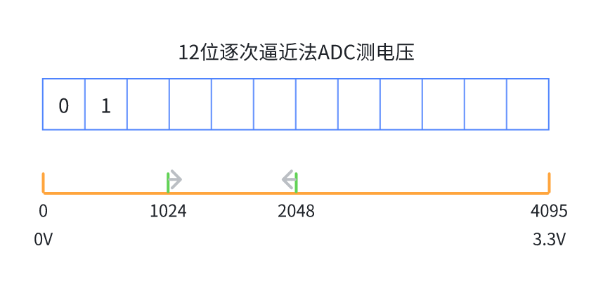
如下图中比较器的位置即为逐次逼近法实现的电路，一路为外部输入的待测电压，一路为内部参考电压，并经过DAC（数字模拟转换器）转换进行比较。

7.1.3 ADC框图¶
- 规则组： 十六个通道，所以可以一次接16个GPIO；但是只有一个数据寄存器所以只能存储一个数据，即只会保留最后一个通道数据。
- 注入组： 四个通道，可以一次接4个GPIO；而且有四个数据寄存器，可以同时存储四个数据。
Danger
由于规则组只有一个数据寄存器，当使用多通道时最好配合 DMA （数据搬运小助手）。
STM32的ADC的总框图如下：
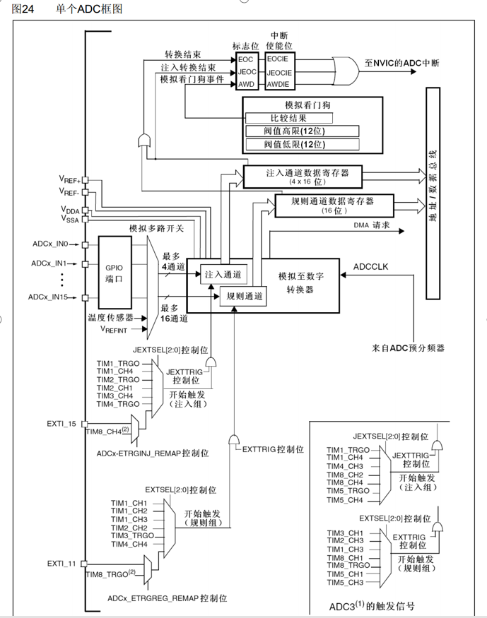
ADC开始转换的触发源如下，主要是一些定时器触发，其中需要注意的是TIM4_TRGO可以用于触发主模式实现硬件的全自动触发ADC，避免频繁进中断触发ADC。
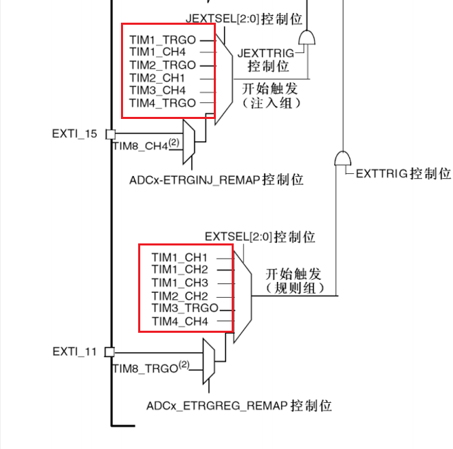
关于ADC的转换通道：
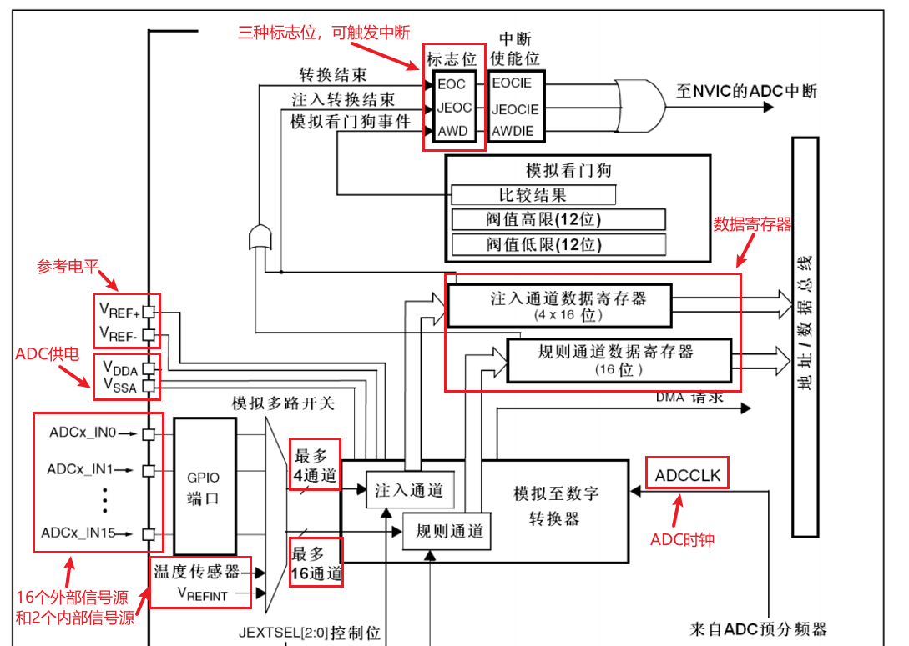
Danger
需要注意的是：ADCCLK最高频率为 14MHZ ，所以ADC预分频器最小应为 6 分频；REF参考电平一般是和ADC的供电引脚相连的。
7.1.4 ADC基本结构¶
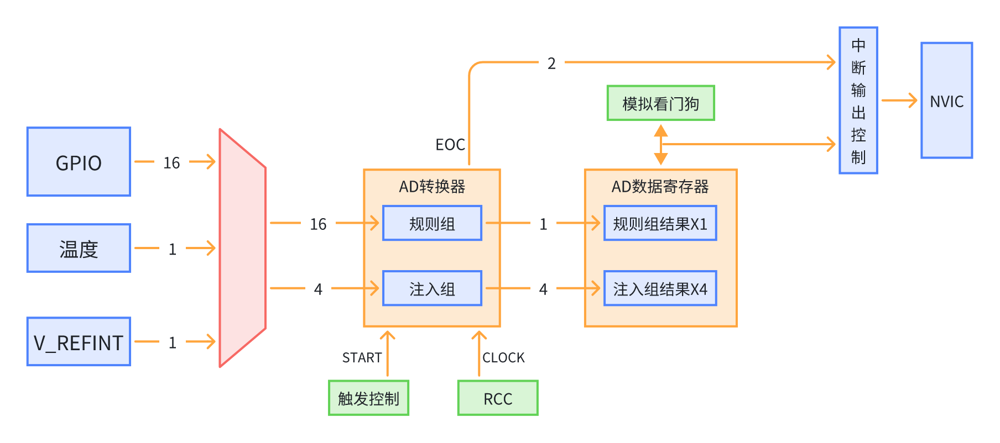
Note
EOC即转换结束或注入转换结束的标志位；这里的模拟看门狗是用于监控转换结果的范围是否超出阈值，若超过阈值则可以申请中断控制。
7.2 输入通道与转换模式¶
7.2.1 输入通道¶
GPIO的 16 个输入通道：
| 通道 | ADC1 | ADC2 | ADC3 |
|---|---|---|---|
| 通道0 | PA0 | PA0 | PA0 |
| 通道1 | PA1 | PA1 | PA1 |
| 通道2 | PA2 | PA2 | PA2 |
| 通道3 | PA3 | PA3 | PA3 |
| 通道4 | PA4 | PA4 | PF6 |
| 通道5 | PA5 | PA5 | PF7 |
| 通道6 | PA6 | PA6 | PF8 |
| 通道7 | PA7 | PA7 | PF9 |
| 通道8 | PB0 | PB0 | PF10 |
| 通道9 | PB1 | PB1 | |
| 通道10 | PC0 | PC0 | PC0 |
| 通道11 | PC1 | PC1 | PC1 |
| 通道12 | PC2 | PC2 | PC2 |
| 通道13 | PC3 | PC3 | PC3 |
| 通道14 | PC4 | PC4 | |
| 通道15 | PC5 | PC5 | |
| 通道16 | 温度传感器 | ||
| 通道17 | 内部参考电压 |
Note
ADC1和ADC2的引脚完全相同，可以用于配置双ADC模式，仅作为了解即可。
7.2.2 转换模式¶
主要的转换模式有四种，是单次转换、连续转换和非扫描模式、扫描模式的四种组合。
- 单次转换 ：即完成一次输入通道序列的模数转换后，触发EOC标志位，需要再次触发才会再进行输入通道序列的模数转换。
- 连续转换 ：即完成一次输入通道序列的模数转换后，触发EOC标志位，紧接着继续进行输入通道序列的模数转换，依次循环不会中断，要获取ADC值读取数据寄存器即可。
- 非扫描模式 ：即输入通道序列中仅有一个输入通道。
- 扫描模式 ：即输入通道序列中仅有多个输入通道。
Danger
使用扫描模式时，为避免数据覆盖，应结合DMA使用。
- 单次转换非扫描模式
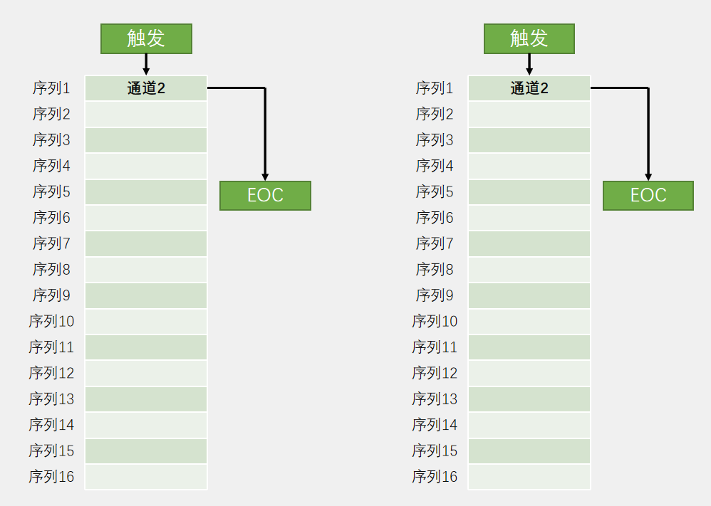
- 连续转换，非扫描模式
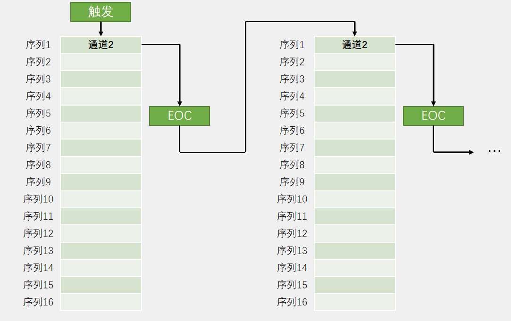
- 单次转换，扫描模式
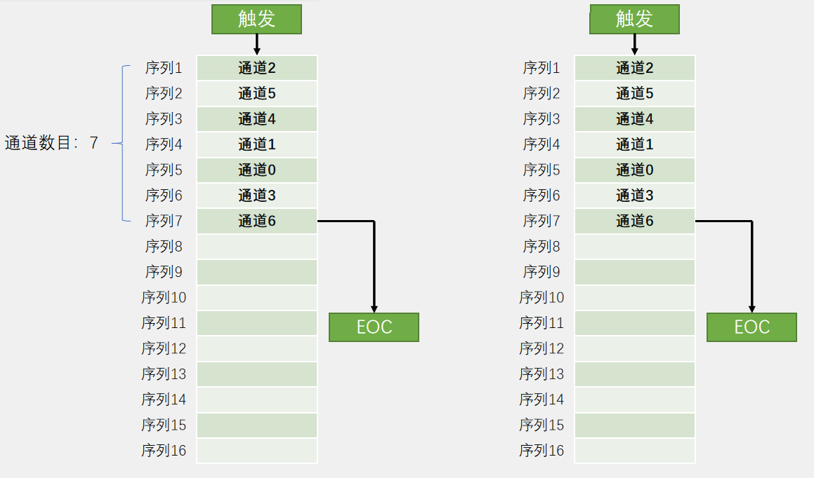
- 连续转换，扫描模式
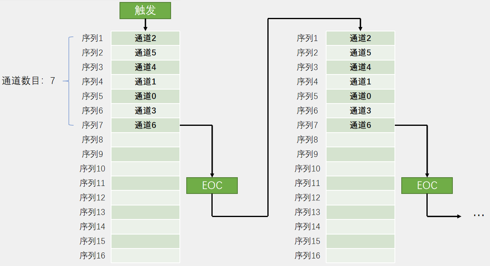
7.3 其他相关知识点¶
7.3.1 触发控制源¶
分为软件和硬件触发：
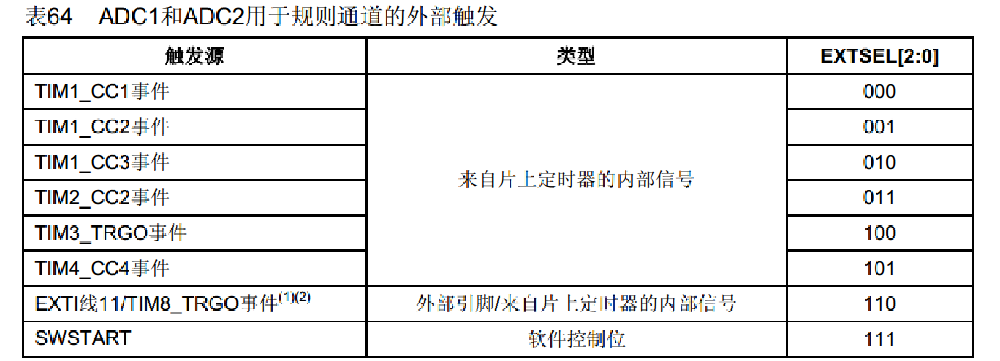
7.3.2 ADC数据对齐¶
- 右对齐
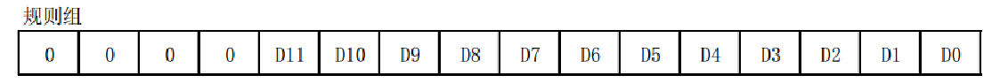
- 左对齐
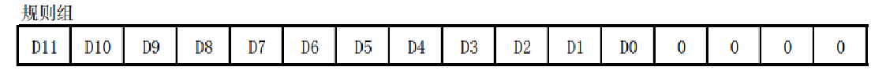
7.3.4 转换时间¶
AD转换的步骤：采样，保持，量化，编码
- 采样保持，即接一个采用开关，在量化编码前收集电压，量化编码开始后断开采样开关，防止电压连续跳变影响转换结果
- 量化编码，即逐次逼近测电压值
STM32 ADC的总转换时间为： TCONV = 采样时间 + 12.5个ADC周期
12.5个ADC周期就是量化编码时间
例如：当ADCCLK=14MHz，采样时间为1.5个ADC周期 TCONV = 1.5 + 12.5 = 14个ADC周期 = 1μs
7.3.4 ADC校准¶
-
ADC有一个内置自校准模式。校准可大幅减小因内部电容器组的变化而造成的准精度误差。校准期间，在每个电容器上都会计算出一个误差修正码(数字值)，这个码用于消除在随后的转换中每个电容器上产生的误差。
-
建议在每次上电后执行一次校准。
-
启动校准前， ADC必须处于关电状态超过至少两个ADC时钟周期
7.4 STM32CubeMX参数¶
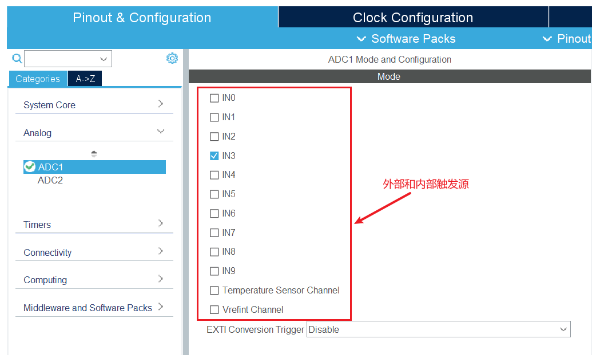
Danger
stm32f103c8t6的外部信号源仅引出了 10 个，需注意。
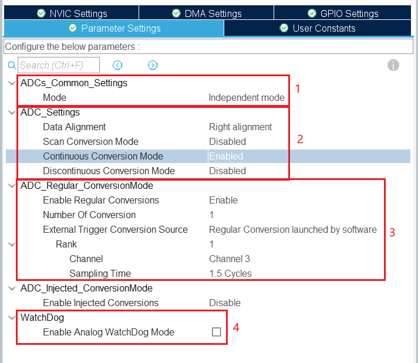
- ADC模式一般使用单ADC，使用多ADC则需要同时打开ADC1和ADC2（多ADC不常用）
- ADC设置，依次为ADC数据对齐，扫描模式，连续转换，非连续转换
- ADC规则组转换模式，依次为规则组转换使能，转换通道数量，外部触发源（这里的参数一般默认即可）
- 需注意
Number Of Conversions参数，当采用扫描模式 前 需要将其数值提高至选用通道的数量，然后就会出现多个Rank。 Rank表示一个通道，下属参数有所属通道，采用周期，一般需参考手册调整采用周期，默认也可以。
- 需注意
- 模拟开门狗
7.5 ADC读取电压值¶
均采用单ADC
电位计接线图，参考江协科技资料，将GPIO引脚按情况修改：

7.5.1 单次转换非扫描模式¶
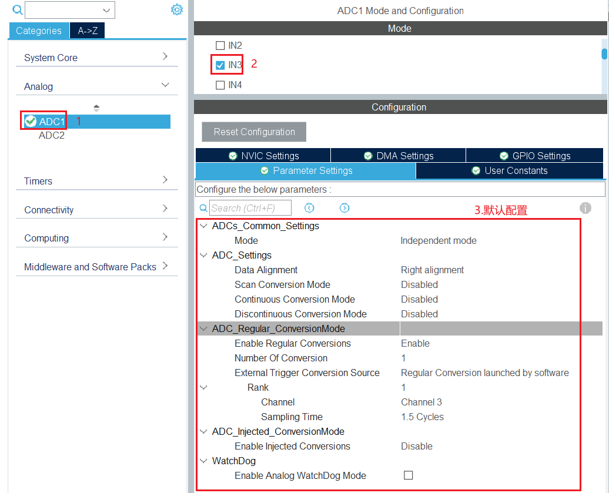
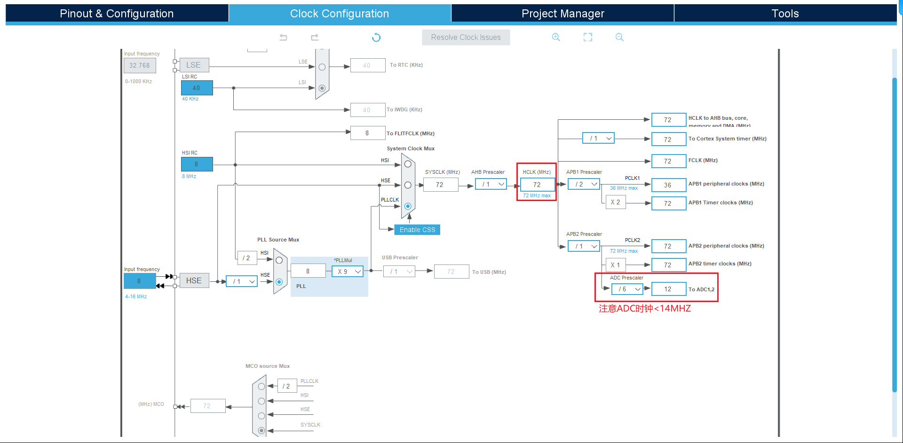
配置串口输出电压值
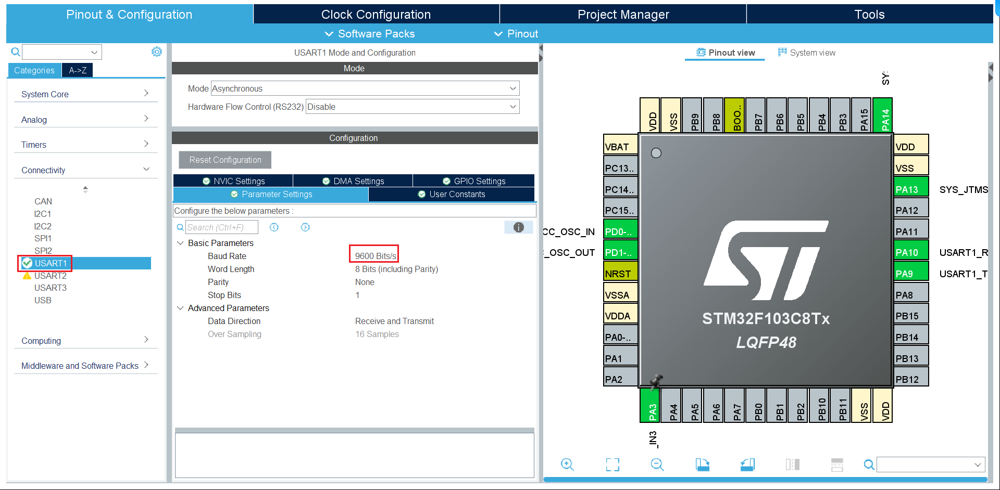
定义串口，模拟值，电压变量
/* USER CODE BEGIN 2 */
uint32_t value = 0;
double voltage = 0.0;
char message[20] = "";
/* USER CODE END 2 */
主要功能代码
/* USER CODE BEGIN WHILE */
while (1) {
// 打开ADC转换
HAL_ADC_Start(&hadc1);
//等待ADC转换，防止第一次读取默认值
HAL_ADC_PollForConversion(&hadc1, HAL_MAX_DELAY);
//读取ADC数据寄存器的值
value = HAL_ADC_GetValue(&hadc1);
//电压换算
voltage = (value / 4095.0) * 3.3 ;
sprintf(message, "ADC: %lu %.2fV", value, voltage);
//串口发送函数
HAL_UART_Transmit(&huart1, message, strlen(message), HAL_MAX_DELAY);
HAL_Delay(500);
/* USER CODE END WHILE */
/* USER CODE BEGIN 3 */
}
/* USER CODE END 3 */
HAL_MAX_DELAY为一直等待，关于串口发送函数可以去第九章瞄一眼，也可以先不管就用就可以。
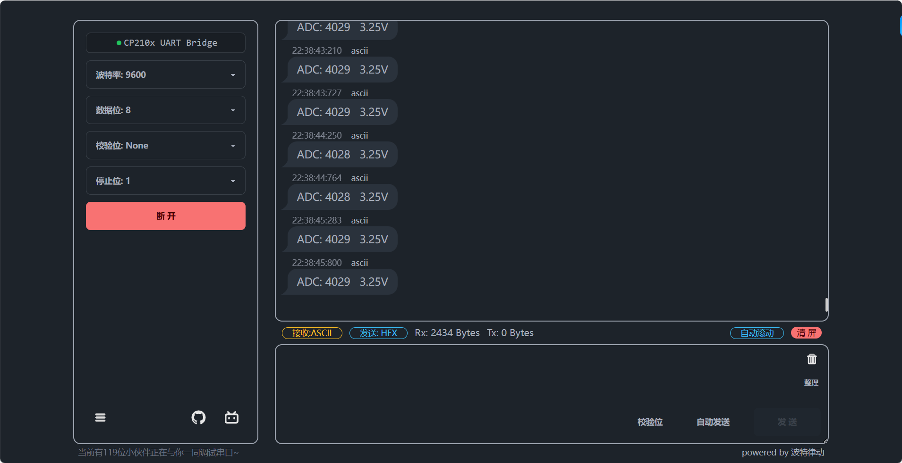
不难看出即使电位计旋转到最大，ADC值也不是最大的 4095 ，是因为我们缺少了校准的一步：
/* USER CODE BEGIN 2 */
uint32_t value = 0;
double voltage = 0.0;
char message[20] = "";
//ADC校准
HAL_ADCEx_Calibration_Start(&hadc1);
/* USER CODE END 2 */
7.5.2 连续转换非扫描模式¶
打开连续转换即可：
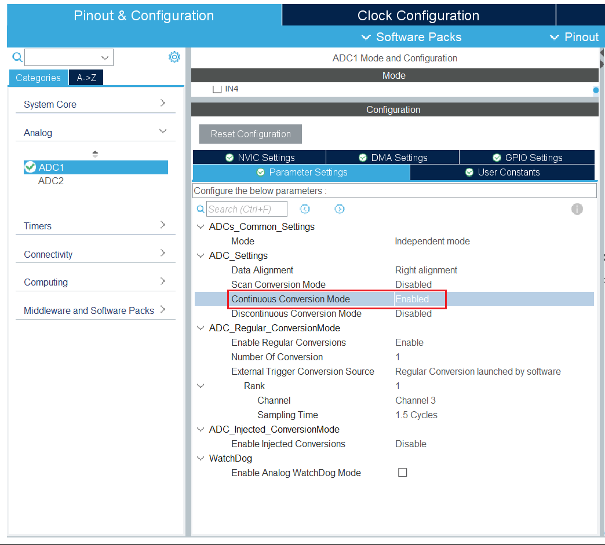
代码只需要把开启转换和等待转换的函数放在循环前即可
/* USER CODE BEGIN 2 */
uint32_t value = 0;
double voltage = 0.0;
char message[20] = "";
HAL_ADCEx_Calibration_Start(&hadc1);
HAL_ADC_Start(&hadc1);
HAL_ADC_PollForConversion(&hadc1, HAL_MAX_DELAY);
/* USER CODE END 2 */
7.5.3 扫描模式说明¶
由于规则组多通道会有数据覆盖问题，故在DMA章节在实现ADC的多通道扫描模式。